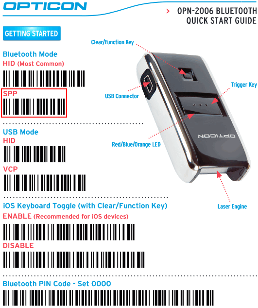
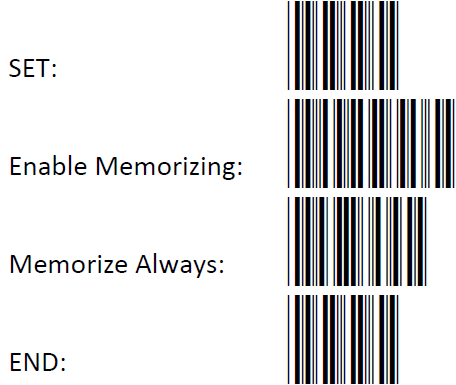

-

Modus uitlezen barcodes
Er zijn twee opties voor het uitlezen van de gescande barcodes:
-
Gescande barcodes direct naar de app sturen. Dit is de optie die standaard ingesteld staat bij een nieuwe scanner.
-
Batch modus. De scanner scant de barcodes naar een lokale opslag. De gescande barcodes
worden pas uitgelezen door de app als de barcode “Transmit memorized data” wordt gescand.Advies is om het bestand ‘Barcodes om op de tablet te plakken’ uit te printen en deze op de tablet te plakken o.i.d.
-
Optie 1 is de standaard optie. Hiervoor hoeft dus niets te worden aangepast.
-
Optie 2 (batch) kan ingesteld worden door onderstaande barcodes achter elkaar te scannen:
-
Opmerking: De scanbalk blijft op dat moment actief, u kunt dus de barcodes van boven naar beneden scannen. U hoeft niet iedere keer de scanknop in te drukken.
-

-